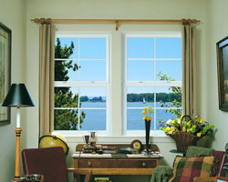

Vinyl Replacement Windows in Kent, Washington
Why all the talk about windows replacements? My home is relatively new so my windows are pretty good, right? Wrong! Many homes built in the past 15 years were built in mass production, and a lot of builders did not use the highest quality materials. A large majority of these homes are suffering from drafty or perhaps leaking windows as well as condensation (fog) in the dual-pane glass. It is not uncommon for many homes to still have single pane glass and aluminum framed windows--the most energy inefficient combination of all.
There is hope! The energy efficiency requirements of window manufacturers have increased drastically within the past 5 years alone. The energy conservation potential as well as sound reduction possibilities are better than ever. In many cases new windows may offer a lifetime warranty! Niemen Glass Company can show you the many options and cost-saving benefits of investing in new vinyl replacement windows for your home.
Benefits of Vinyl Replacement Windows
Replacement vinyl windows have many benefits for the typical homeowner. Vinyl windows not only reduce energy costs by up to 30%, but they also are much easier to clean and are extremely low maintenance. Below are some of the many benefits of choosing to have your older windows replaced with new vinyl replacement windows:
Energy Efficiency & Increased Indoor Comfort
Simply put, vinyl (dual-pane) windows are much more energy efficient. Who is not looking to save a little money these days? Replacing your older drafty windows with newer vinyl windows is the perfect solution to save you money on your energy bills each month. On both the cold winter days and the hot summer days we experience in Kent, Washington, vinyl replacement windows help maintain a comfortable temperature inside your home.
Vinyl replacement windows also offer sun protection. Many window manufacturers apply a "low-e" coating to the glass, which blocks out a significant percentage of the sun's harmful UV rays that enter your home. This coating protects your carpets, your furniture and, most importantly, your family from sun exposure.
Noise Reduction
Vinyl replacement windows provide a significant sound barrier that practically eliminates outside sound. This is an extremely nice feature if you live in a high traffic area or even if the neighbor's dog is prone to bark all night long.
Aesthetics
Aesthetics is a major reason to consider vinyl replacement windows. Replacement vinyl windows simply look better. Window companies offer a variety of styles and finishes to match the style of any home. Vinyl replacement windows will give your house a boost in curb appeal.
Finally, vinyl windows can add to your home's resale value. Figures vary, but some studies show that new vinyl windows can add $20,000 - $30,000 to a home's asking price.